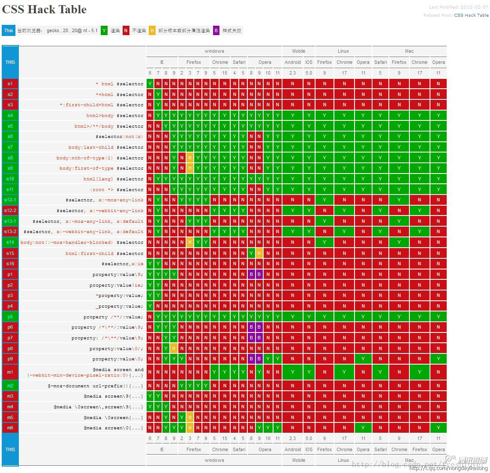

原文连接:https://www.cnblogs.com/tynam/p/10834091.html
自适应
宽度自适应：网页元素根据窗口或子元素自动调整宽度
适用百分比进行设置，例如：100% 铺满；50% 占据一般宽度
块元素如果不设置宽度，默认为100%
自适应中可以设置最大或者最小宽度和高度
例如：min-height：300px；最小高度为300px；
但是在IE6浏览器中不识别 min-height/max-height/min-width/max-width 属性，height 属性在IE6中类似min-height ；
IE6 中解决最小高度方法：
hack1:min-height:value;_height:value;
hack2:min-height:value; height:auto!import; height:value;
高度自适应
设置方法：html,body {height:100%;}
需要自适应的元素：height: 100%;
根据父元素自适应
父元素：height: value;
需要自适应的子元素：height:100%;
height:auto; 指根据块内元素自动调节；
height：100%；指相对父块高度而定义。按照离他最近且有定义高度的父层的高度进行定义；
浏览器兼容
五大浏览器四大内核
IE浏览器内核：Trident内核，也是俗称的IE内核；
Chrome浏览器内核：统称为Chromium内核或Chrome内核，以前是Webkit内核，现在是Blink内核；
Firefox浏览器内核：Gecko内核，俗称Firefox内核；
Safari浏览器内核：Webkit内核；
Opera浏览器内核：最初是自己的Presto内核，后来是Webkit，现在是Blink内核；
为什么会出现浏览器兼容性问题
因为不同浏览器使用内核及所支持的HTML（标准通用标记语言下的一个应用）等网页语言标准不同；以及用户客户端的环境不同（如分辨率不同）造成的显示效果不能达到理想效果。最常见的问题就是网页元素位置混乱，错位。
CSS Bug
css样式在各浏览器中解析不一致的情况，或者说css样式在浏览器中不能正确显示的问题
CSS Hack
css 中， hack是指一种兼容性css在不同浏览器中正确显示的技巧方法，因为他们都属于个人对css代码的非官网修改，或非官网的补丁。
Filter
过滤的意思，他是一种对特定的浏览器或浏览器组显示或隐藏规则或声明的方法，本质上说Filter是一种用来过滤不同浏览器的Hack类型
对浏览器css兼容性的学习理解及问题解决汇总
转载：https://www.cnblogs.com/ahao68/p/5431250.html
一、从浏览器内核的角度 来看，浏览器兼容性问题可分为以下三类：
1. 渲染相关：和样式相关的问题，即体现在布局效果上的问题。
2. 脚本相关：和脚本相关的问题，包括JavaScript和DOM、BOM方面的问题。对于某些浏览器的功能方面的特性，也属于这一类。
3. 其他类别：除以上两类问题外的功能性问题，一般是浏览器自身提供的功能，在内核层之上的。
二、浏览器兼容性相关问题及其解决思路
1、目前，各主流浏览器的新版本，对于 W3C 的标准支持很好，因此，首先保证代码符合 W3C 的标准，这是解决浏览器兼容问题的前提。
其次，对于某些支持受限的属性，针对不同的浏览器添加相应的前缀，比如-webkit-、-o-、-moz-。
2、不同浏览器默认的内外边距不同的问题
解决： *{margin:0;padding:0;}
3、不同浏览器水平居中的问题：ie6-7文本居中，嵌套的块元素也会居中 ，ff /opera /safari /ie8文本会居中，嵌套块不会居中
解决： 块元素设置 margin-left:auto;margin-right:auto 或margin:0 auto; 或外层嵌套div设置<div align=”center”></div>
浮动块元素的居中：<div style="margin:0px auto;"><div style="float:left;"></div></div>
4、不同浏览器垂直居中的问题 ： 在浏览器中 想要垂直居中，设置vertical-align:middle; 不起作用。例如：ie6下文本与文本输入框对不齐，需设置
vertical-align:middle，但是文本框的内容不会垂直居中
解决： 给容器设置一个与其高度相同的行高 line-height:与容器的height一样
5、不同浏览器关于高度问题 ： 如果是动态地添加内容，高度最好不要定义。浏览器可以自动伸缩，然而如果是静态的内容，高度最好定好。 如果设定了高度，内容过 多时，ie6下会自动增加高度、其他浏览器会超出边框
解决： 1.设置overflow:hidden; 2.高度自增height:auto!important;height:100px;
6、IE6 默认的div高度问题： ie6默认div高度为一个字体显示的高度，在ie6下div的高度大于等于一个字的高度，因此在ie6下定义高度为1px的容器，显示的是一个字 体的高度
解决：为这个容器设置下列属性之一 1、设置overflow:hidden; 2、设置line-height:1px; 3、设置zoom:0.08
7、IE6 最小高度(宽度)的问题： ie6不支持min-height、min-width属性，默认height是最小高度，width是最小宽度。
解决： 使用ie6不支持但其余浏览器支持的属性!important。 设置属性min-height:200px; height:auto !important; height:200px;
8、td高度的问题 ： table中td的宽度都不包含border的宽度，但是oprea和ff中td的高度包含了border的高度
解决： 设置line-height和height一样。在ie中如果td中的没有内容，那么border将不会显示
9、div嵌套p时，出现空白行问题：div中显示<p>文本</p>，ff、oprea、Chrome：top和bottom都会出现空白行，但是在ie下不会出现空白行。
解决：设置p的margin:0px，再设置div的padding-top和padding-bottom
10、IE6-7图片下面有空隙的问题：块元素中含有图片时，ie6-7中会出现图片下有空隙
解决：1、在源代码中让</div>和<img>在同一行
2、将图片转换为块级对象display:block;
3、设置图片的垂直对齐方式 vertical-align:top/middle/bottom
4、改变父对象的属性，如果父对象的宽、高固定，图片大小随父对象而定，那么可以对父元素设置： overflow:hidden;
5、设置图片的浮动属性 float:left;
11、IE6双倍边距的问题 ： ie6中设置浮动，同时又设置margin时，会出现双倍边距的问题 例float:left;width:100px;margin:0 100px;
解决： 设置display:inline;
12、IE6两个层之间3px的问题： 左边层采用浮动，右边没有采用浮动，这时在ie6中两层之间就会产生3像素的间距
解决： 1、右边层也采用浮动 float 2、左边层添加属性 margin-right:-3px;
13、IE6 子元素绝对定位的问题： 父级元素使用padding后，子元素使用绝对定位，不能精确定位
解决： 在子元素中设置 _left:-20px; _top:-1px;
14、显示手型cursor:hand 问题： ie6/7/8、opera 都支持 ，但是safari 、 ff 不支持
解决： 写成 cursor:pointer; (所有浏览器都能识别)
15、IE6-7 line-height失效的问题： 在ie中img与文字放一起时， line-height不起作用
解决：都设置成float
16、td自动换行的问题 ： Table宽度固定，td自动换行
解决： 设置Table的table-layout:fixed，td的word-wrap:break-word
17、子容器浮动后，父容器扩展问题： 子容器都float以后，父容器没有设定高度,父容器将不会扩展
解决： 只需要添加一个clear:both的div，代码如下：
<div style="border:1px solid #333;width:204px">
<div style="width:100px;border:1px solid #333; float:left; ">子容器a</div>
<div style="width:100px;border:1px solid #333; float:left;">子容器b</div>
<div style="clear:both"></div>
</div>
18、透明png图片会带背景色问题： 在ie6下透明的png图片会带一个背景色
解决：
background-image: url(icon_home.png);/* 其他浏览器 */
background-repeat: no-repeat;
_filter:progid:DXImageTransform.Microsoft.AlphaImageLoader(src='icon_home.png'); /* IE6 */
_background-image: none; /* IE6 */
19、list-style-position默认值的问题： ie下list-style-position默认为inside, firefox默认为outside
解决： css中指定为outside即可解决兼容性问题
20、 list-style-image准确定位的问题： li前设置图片时，图片与其后的文字对齐问题
解决：1、采用背景定位 和 字符缩进的方法 background:url() no-repeat left center; text-index:16px;
2、采用相对定位方法 li 设置list-style:url(); li的子元素position:relative;top:-5px;
21、ul标签默认值的问题 ： ul标签在ff中默认是有padding值的,而在ie中只有margin有值
解决： 定义ul{margin:0;padding:0;}就能解决大部分问题
22、IE中li指定高度后，出现排版错误 问题： 在ie下如果为li指定高度可能会出现排版错位
解决： 设置line-height
23、ul或li浮动后，显示在div外 问题： div中的ul或li设置float以后，都不在div中
解决： 必须在ul标签后加<div style="clear:both"></div>来闭合外层div
24、ul或者li浮动后，margin变大 问题： ul设置 float后，在ie中margin将变大
解决： 设置ul的display:inline，li的list-style-position:outside；li浮动问题设置li的display:inline
25、嵌套使用ul、li的问题： ie的bug，嵌套使用ul、li时，里层的li设置float以后，外层li不设置float, 里面的ul顶部和它外面的li总是有一段间距
解决： 设置里面的ul的zoom:1
26、 IE6-7 li底部有3px的问题 ：这个bug产生的充要条件是li的子元素浮动并且li设置了以下CSS属性之一：width、height、zoom、padding-top、padding-bottom、 margin-top、margin-bottom。
解决：
1、div设置clear:left|both，这时li不能设置width、height、zoom。
2、li设置float:left，这时li可以设置width、height、zoom。
3、li设置clear:left|both，这时li不能设置width、height、zoom。
4、IE6/IE7的这个Bug可以通过给li中的div设置vertical-align:top|middle|bottom解决。
27、IE6 垂直列表间隙的问题： li中有a且设置display:block时，ie6中列表间会出现空隙
解决： 1、li中加display:inline; 2、li使用float 然后 clear:both; 3、给包含的文本末尾添加一个空格 4、设置width
28、IE6 列表背景颜色失效的问题 ： 当父元素设置position:relative;时，在ie6中第一个ul、ol、dl的背景颜色失效
解决： ul、ol、dl 都设置为position:relative;
29、IE6-7 列表背景颜色失效的问题2 ： 做横向导航栏时，ul设置为float且有背景色，li设置为float。ie6-7背景颜色失效
解决： 很多ie的bug都可以通过触发layout来解决 ul添加属性 1、height:1%; 2、float:left; 3、zoom:1;
30、列表不能换行的问题 ： li设置为浮动，后面的li紧随其后，不能换行
解决： 1、为这个ul定义合适的宽高 2、给包含这个ul 的父div定义合适的宽高。
31、超链接访问过后hover样式不出现的问题 ： 击超链接后，hover、active样式没有效果
解决： 改变CSS属性的排列顺序: L-V-H-A
32、 禁用中文输入法的问题 ： 不能在输入框中输入汉字
解决： 只在ie系列 和ff中有效 ime-mode:disabled (但可以粘贴) 禁用粘贴： onpaste="return false"
33、除去滚动条的问题 ： 隐藏滚动条
解决： 1、只有ie6-7支持<body scroll="no"> 2、除ie6-7不支持 body{overflow:hidden} 3、所有浏览器 html{overflow:hidden}
34、让层显示在FLASH之上：
解决：把FLASH设置透明 1、<param name=" wmode " value="transparent" /> 2、<param name="wmode" value="opaque"/>
35、去除链接虚线边框的问题 ： 当点击超链接后，ie6/7/8 ff会出现虚线边框 ,而opera、safari没有虚线边框
解决： ie6/7中 设置为a { blr:expression(this.onFocus=this.blur()) } ie8 和 ff 都不支持expression 在ie8 、ff中设置为 :focus { outline: none; }
36、css滤镜的问题 ： css滤镜只在ie中有效，Firefox, Safari(WebKit), Opera只能够设置透明，它们不支持滤镜filter，无法实现图片切换中间变换的效果，只能通过透明度来 设置。
解决： ff中设置透明度 -moz-opacity:0.10; opacity:0.6; ie中只设置filter:alpha(opacity=50); 时，ie6-7失效，还要设置 1、zoom:1; 2、width:100%;
37、IE6背景闪烁的问题：链接、按钮用CSS sprites作为背景，在ie6下会有背景图闪烁的现象。原因是:IE6没有将背景图缓存，每次触发hover的时候都会重新加载
解决：用JavaScript设置ie6缓存这些图片： document.execCommand("BackgroundImageCache ",false,true);
38、ff、chrome绝对定位无效 问题： 在IE给td设置position:relative，然后给它包含的一个容器使用position:absolute进行定位是有效的，但在FF和Chrome下却不可以。
解决：设置td的display:block。
39、IE6 绝对定位的问题 问题：
<div style="position:relative;border:1px solid orange;text-align:center;">
<div style="position:absolute;top:0;left:0; background:#CCC;">dovapour</div>
<a href="#" title="vapour的blog">内容</a>
</div>
解决：
left的定位错误问题
1、给父层设置zoom:1触发layout。 2、给父层设置宽度width
bottom的定位错误问题
1、给父层设置zoom:1触发layout。 2、给父层设置高度height
40、float的div闭合的问题：
例如：<#div id=”floatA” ><#div id=”floatB” ><#div id=” NOTfloatC” >这里的NOTfloatC并不希望继续平移，而是希望往下排。(其中floatA、floatB的属性已经设置为 float:left;)
这段代码在IE中毫无问题，问题出在其他浏览器中。原因是NOTfloatC并非float标签，必须将float标签 闭合。
解决：
在 <#div class=”floatB”> <#div class=”NOTfloatC”>之间加上 < #div class=”clear”>这个div一定要注意位置，而且必须与两个具有float属性的div同级，之间不能存在嵌套关系，否则会 产生异常。并且将clear这种样式定义为为如下即可：.clear{ clear:both;}
41、选框、复选框与后面的文字对不齐 问题：
解决：
.align{font-size:12px;}
.align input{ display:block; float:left;}
.align label{ display:block; float:left; padding-top:3px; *padding-top:5px;}
不足之处：设置padding后高度和宽带都会增加
42、边框重叠说明 说明：
为 table、td 都指定了边框后，然后使用border-collapse:collapse让边框重叠，可以看出在发生重叠时，Firefox 是用 td 覆盖 table 的，而 IE 是用 table 覆盖 td 的。使用时候需要注意。
43、设置td padding的说明：
设置td的padding以后高度和宽带都会增加,padding-left和padding-right的效果都一样增加了td的宽带，但是padding-top和padding-bottom的效果不一样。最好不要使用td的ding-top和padding-bottom
44、使一个层垂直居中于浏览器中 说明：
使用百分比绝对定位,与外补丁负值的技巧,负值的大小为其自身宽度高度除以二
div { position:absolute; top:50%; lef:50%; margin:-100px 0 0 -100px; width:200px; height:200px; border:1px solid red; }
45、行内属性标签，设置display:block后采用float布局，又有横行的margin的情况，IE6间距bug，IE6里的间距比超过设置的间距
解决：在display:block;后面加入display:inline;display:table;
备注：行内属性标签，为了设置宽高，我们需要设置display:block;(除了input标签比较特殊)。在用float布局并有横向的margin后，在IE6下，他就具有了块属性float后的横向margin的bug。不过因为它本身就是行内属性标签，所以我们再加上display:inline的话，它的高宽就不可设了。这时候我们还需要在display:inline后面加入display:talbe。
46、float的div闭合;清除浮动;自适应高度;
① 例如：<#div id=”floatA” ><#div id=”floatB” ><#div id=” NOTfloatC” >这里的NOTfloatC并不希望继续平移，而是希望往下排。(其中floatA、floatB的属性已经设置为 float:left;) 这段代码在IE中毫无问题，问题出在FF。原因是NOTfloatC并非float标签，必须将float标签闭合。在 <#div class=”floatB”> <#div class=”NOTfloatC”>之间加上 < #div class=”clear”>这个div一定要注意位置，而且必须与两个具有float属性的div同级，之间不能存在嵌套关系，否则会产生异常。并且将clear这种样式定义为为如下即可： .clear{ clear:both;}
②作为外部 wrapper 的 div 不要定死高度,为了让高度能自动适应，要在wrapper里面加上overflow:hidden; 当包含float的 box的时候，高度自动适应在IE下无效，这时候应该触发IE的layout私有属性，用zoom:1;可以做到，这样就达到了兼容。 例如某一个wrapper如下定义： .colwrapper{ overflow:hidden; zoom:1; margin:5px auto;}
③对于排版,我们用得最多的css描述可能就是float:left.有的时候我们需要在n栏的float div后面做一个统一的背景,譬如: <div id=”page”> <div id=”left”></div> <div id=”center”></div> <div id=”right”></div> </div> 比如我们要将page的背景设置成蓝色,以达到所有三栏的背景颜色是蓝色的目的,但是我们会发现随着left center right的向下拉长,而 page居然保存高度不变,问题来了,原因在于page不是float属性,而我们的page由于要居中,不能设置成float,所以我们应该这样解决 <div id=”page”> <div id=”bg” style=”float:left;width:100%”> <div id=”left”></div> <div id=”center”></div> <div id=”right”></div> </div> </div> 再嵌入一个float left而宽度是100%的DIV解决之
④万能float 闭合(非常重要!) 关于 clear float 的原理可参见 [How To Clear Floats Without Structural Markup],将以下代码加入Global CSS 中,给需要闭合的div加上 class="clearfix" 即可,屡试不爽. /* Clear Fix */ .clearfix:after { content:"."; display:block; height:0; clear:both; visibility:hidden; } .clearfix { display:inline-block; } /* Hide from IE Mac */ .clearfix {display:block;} /* End hide from IE Mac */ /* end of clearfix */ 或者这样设置：.hackbox{ display:table; //将对象作为块元素级的表格显示}
三、csshack的使用
CSS Hack大致有3种表现形式，CSS类内部Hack、选择器Hack以及HTML头部引用(if IE)Hack，
1、CSS类内部Hack，使用了渐进识别的方式，从总体中逐渐排除局部。首先，巧妙的使用“\9”这一标记，将IE游览器从所有情况中分离出来。接着，再次使用“+”将IE8和IE7、IE6分离开来，最后用“_”将IE7、IE6区分。

.bb{
height:32px;
background-color:#f1ee18;/*所有识别*/
.background-color:#00deff\9; /*IE6、7、8识别*/
+background-color:#a200ff;/*IE6、7识别*/
_background-color:#1e0bd1;/*IE6识别*/
}
/*一个用于展示的class为bb的div标签*/
< div class ="bb"></ div >
2、HTML头部引用(if IE)Hack
只在IE下生效
<!--[if IE]>
这段文字只在IE浏览器显示
<![endif]-->
只在IE6下生效
<!--[if IE 6]>
这段文字只在IE6浏览器显示
<![endif]-->
只在IE6以上版本生效
<!--[if gte IE 6]>
这段文字只在IE6以上(包括)版本IE浏览器显示
<![endif]-->
只在IE8上不生效
<!--[if ! IE 8]>
这段文字在非IE8浏览器显示
<![endif]-->
非IE浏览器生效
<!--[if !IE]>
这段文字只在非IE浏览器显示
<![endif]-->
3、选择器Hack
选择器前缀法是针对一些页面表现不一致或者需要特殊对待的浏览器，在CSS选择器前加上一些只有某些特定浏览器才能识别的前缀进行hack。
比如：
*html *前缀只对IE6生效*
+html *+前缀只对IE7生效
@media screen\9{...}只对IE6/7生效
@media \0screen {body { background: red; }}只对IE8有效
csshack汇总表
